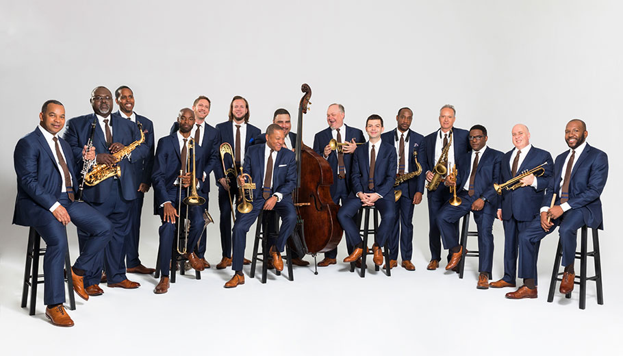

Samara Joy: A Joyful Holiday!
December 22 | Miller Theatre | 7:30 pm

About the Artist
Samara Joy, one of jazz’s newest stars, celebrates the holidays on the Kimmel Campus! With her GRAMMY Award-winning Verve Records debut, Linger Awhile, 23-year-old Bronx native Samara Joy makes her case to join the likes of Sarah, Ella, and Billie as the next mononymous jazz singing sensation recorded by the venerable label.
Her voice, rich and velevty yet precociously refined, has already earned her fans like Anita Baker and Regina King, appearances on the TODAY Show, The Tonight Show with Jimmy Fallon, The Late Show with Stephen Colbert, CBS Mornings, MSNBC, Kelly Clarkson, Jennifer Hudson, Drew Barrymore, etc. in addition to millions of likes on TikTok - cementing her status as perhaps the first Gen Z singing star.
On Linger Awhile, Samara introduces that massive audience to a slew of classic standards several times older than she is through her timeless, irresistable sound. The New York Times praised the "silky-voiced rising star" for "helping jazz take a youthful turn" while NPR All Things Considered named her a "classic jazz singer from a new generation. In February 2023, Samara Joy took home two GRAMMY - Best Jazz Vocal Album and the auspicious Best New Artist award.
Tickets from $45-$75
Jazz at Lincoln Center Orchestra with Wynton Marsalis
Max Roach Centennial Celebration
January 21, 2024 | Verizon Hall | 5:00 pm
About the Artist
Revered as one of the greatest jazz drummers of all time, Max Roach was among the first to use music to address the racial, political, and social issues of his time. The Jazz at Lincoln Center Orchestra (JLCO) celebrates the centennial of this pioneering legend, master musician and innovative bandleader who spanned a diverse range of styles that influenced generations to follow.
In 1961, after having been an influential member of the Charlie Parker-Dizzy Gillespie Quintet, pioneering bebop, and performing alongside Miles Davis’ seminal “Birth of the Cool” album, and a founder of the Clifford Brown-Max Roach Quintet, Roach went on to make albums with his wife, the trailblazing singer and songwriter Abbey Lincoln. At the time, he told DownBeat Magazine that he would “never again play anything” that did not “have social significance.”
The JLCO comprises 15 of today's finest jazz soloists and ensemble players. Under Music Director Wynton Marsalis, the JLCO performs a vast repertoire, from rare historic compositions to Jazz at Lincoln Center-commissioned works, including compositions and arrangements by Duke Ellington, Thelonious Monk, Mary Lou Williams, Benny Goodman, and many others.
Tickets from $55-$95
Emmet Cohen Trio
March 14 | Perelman Theatre | 7:00 pm

About the Artist
Multifaceted American jazz pianist and composer Emmet Cohen has emerged as one of his generation's pivotal figures in music and the related arts. A recognized prodigy, Cohen began Suzuki method piano instruction at age three, and his playing quickly became a mature melding of musicality, technique, and concept. DownBeat observed that his "nimble touch, measured stride and warm harmonic vocabulary indicate he's above any convoluted technical showmanship." In the same spirit, Cohen himself has noted that playing jazz is "about communicating the deepest levels of humanity and individuality; it's essentially about connections, both among musicians and audiences." He leads his namesake ensemble, the Emmet Cohen Trio; is a vibrant solo performer, and is in constant demand as a sideman. Posessing a fluid technique, an innovative tonal palette, and extensive repertoire, Cohen plays with the command of a seasoned veteran and the passion of an artist fully devoted to his medium.
Emmet Cohen's exacting keyboard artistry has garnered numerous accolades from the international jazz community. He placed first in both the American Pianists Association Jazz Competition (2014) and the Phillips Piano Competition at the University of West Florida (2011). He was a finalist in the prestigious American Pianists Association's Cole Porter Fellowship (2015, 2011) and the Thelonious Monk International Piano Competition (2011). Cohen has appeared in world-renowned jazz events, including the Newport, Monterey, North Sea, Bern, Edinburgh, Detroit, and Jerusalem jazz festivals, as well as the New Orleans Jazz and Heritage Festival.
Tickets from $40-$80
Terence Blanchard Fire Shut Up in My Bones
April 7, 2024 |Verizon Hall | 5:00 pm

About the Artist
This extraordinary performance features musicians and operatic vocalists focusing on music from Terence Blanchard's groundbreaking opera Fire Shut Up in My Bones, based on the memoir of celebrated writer and The New York Times columnist Charles Blow. With a libretto written by NAACP Image Award-winning actress, director, and screenwriter Kasi Lemmons, Fire Shut Up in My Bones premiered at Opera Theatre of Saint Louis in 2019 and opened the 2021-22 season at the Metropolitan Opera in New York in September 2021. The New York Times labeled Blanchard's opera "inspiring," "subtly powerful" and "a bold affecting adaptation of Charles Blow's work."
Two-time Oscar® nominee, six-time Grammy®-winner and 2018 USA Fellow trumpeter/composer Terence Blanchard has been a consistent artistic force for making powerful musical statements concerning pivotal moments in American culture – past and present. Blanchard is celebrated not only for his albums and live performances but also for creating strong backdrops to human stories, from his expansive scores for Spike Lee films— such as his Oscar-nominated BlacKkKlansman (2018) score - to his opera, Fire Shut Up in My Bones, which marked the first time a Black composer or a Black librettist had been staged at the Met in the organization's 138-year history.
Tickets from $45-$95
Herb Alpert & Lani Hall
May 18 | Perelman Theatre | 7:00 pm

About the Artist
Don't miss your chance to see two legendary performers live. Iconic trumpeter Herb Alpert and Lani Hall, Grammy-winning vocalist and former lead singer of Brazil 66 with Sergio Mendes, are world-renowned for their classic recordings, "Mas Que Nada," "Fool On The Hill," "Going Out Of My Head," and "Daytripper."
Herb is celebrating his 60th year since recording his first hit song, "The Lonely Bull" in 1962. Herb, Lani, and their incredible band perform an eclectic mix of American standards, Brazilian jazz, some Beatles, some classic Tijuana Brass, and Brazil ’66 songs as well as many surprises. The last two years may have kept Herb and Lani from completing their North American tour, but the dynamic duo is making up for lost time, both creatively and performance-wise. On September 30, 2022, Herb released his latest album, the 11-track Sunny Side of the Street which includes six original compositions and the hit singles “I’ll Remember You,” Louis Armstrong’s “On the Sunny Side of the Street,” as well as “Tickle Time,” “Here She Comes” and “Pata Pata.”
Tickets from $49-$79
Jazz Bars and Venues in Philly
Chris's Jazz Café
Located: 1421 Sansom St. | Phone: (215) 568-3131
Chris’ Jazz Café is an institution in a city known for producing revered musical artists such as John Coltrane, Dizzy Gillespie, Billie Holiday and Ethel Waters. Founded in 1989, Chris’ Jazz Café is the longest continuously operating jazz club in the history of Philadelphia, attracting visitors from more than 160 countries and all 50 states.
This go-to jazz destination has hosted some of the biggest names in jazz, both international and national superstars, including the legendary Count Basie Orchestra, Junior Mance, Pat Martino, Joey DeFrancesco, Kevin Eubanks and many others.
South Jazz Kitchen
Located: 600 N. Broad St. | Phone: (215) 600-0220
At SOUTH, America’s original music meets southern heritage cuisine in Philadelphia’s Spring Garden neighborhood on Avenue of the Arts North.
Since 2015, SOUTH has served up elevated comfort food rooted in the food of the south. You’ll find soul-satisfying dishes available. Now in its 7th year, SOUTH is firmly established as Philadelphia’s premier Jazz club, serving up the coolest Jazz and Southern cuisine elevated to new heights. The menu incorporates inventive combinations of traditional and modern; indigenous Southern ingredients with local products, creative presentations and a touch of the unexpected.
Time
Located: 1315 Sansom St. | (215) 985-4800
A 60-seat dining room is done in posh, nouveau style, accented by Venetian blown glass & teardrop crystals. Sip and dine at elevated banquettes or around the large bar while enjoying live music from the corner stage
Bob & Barbara's Lounge
Located: 1509 South St. | Phone: (215) 545-4511 | No cover charge
Opened by Robert Porter and Barbara Carter, Bob & Barbara's Lounge has been a South Street staple since 1969. Known widely for free live music, Philly's longest running drag show, and "The Special", Bob & Barbara's Lounge carries on the party started by the original owners. They are a CASH ONLY bar.
City Winery
Located: 990 Filbert St. | (267) 479-7373
Philadelphia's premier venue, restaurant, winery, and event space. Live music, comedy, and wine events in an intimate venue with good food, a full bar, and great wine.
Philadelphia Clef Club of Jazz and Performing Arts
Located: 736 S. Broad St. | Phone: (215) 893-9912
The Philadelphia Clef Club of Jazz and Performing Arts (PCC) mission is to “celebrate and preserve the legacy of jazz through accessible education for the Greater Philadelphia region, and to support the evolving art form through talent development, programming, and public performance.”
Jazz Bridge Neighborhood Concert Series
Locations Vary | Phone: (215) 517-8337
A registered 501 (c)(3) non-profit organization, Jazz Bridge supports musicians by providing paid performance opportunities through our live neighborhood concerts and special event presentations. A community favorite for over 12 years, our concerts celebrate the Philadelphia Jazz & Blues tradition and build cultural awareness throughout the region.
Jazz Bridge also produces some limited series jazz performances. With support from the City of Philadelphia and the Friends of Hawthorne Park, we present outdoor concerts in City parks during the summer months. The City also funds us to curate performances held in local Free Library branches and senior centers during the fall and winter months as well as April (Jazz Appreciation Month).
Jazz in Fairmount Community Concert Series
Locations Vary | Free Admission
They organize community performances across Fairmount, Brewerytown, and Francisville. Our goal is to foster community engagement through music while increasing access and exposure to local jazz artists.
Rite of Swing Jazz Café
Located: 1837 N. Broad St. | (215) 204-9860 | Free Admission | 4:30-6:30 pm
Located in the lobby of the Temple Performing Arts Center, the Rite of Swing is one of jazz's best kept secrets. On Thursday's throughout the semester from 4:30-6:30 pm, head here to hear jazz from guest artists, faculty and students.
Woodmere Art Museum
Located: 9201 Germantown Ave. | (215) 247-0476
Throughout the year, Woodmere offers family events, tours, gallery talks, lectures, panel discussions, studio art classes, film, and music performances. Woodmere offers the experience of art and nature together with a growing collection of sculpture installations across its six green acres. Complemented by an interactive map, WOW, Woodmere’s Outdoor Wonder, brings together monumental outdoor sculpture, horticulture, environmental conservation, and education.
The Barnes Foundation
Located: 2025 Benjamin Franklin Parkway | (215) 278-7000
The Barnes Foundation puts on a number of performances during the year.
World Café Live
Located: 3025 Walnut Street | (215) 222-1400
Opened in 2004, World Cafe Live was designed to change the landscape for artists and audiences of all ages and become a new model of what an independent music venue in Philadelphia can and should be–a welcoming space for the community with exceptional hospitality.
In December 2019, World Cafe Live and LiveConnections merged to become a unified nonprofit. Together, they are working to grow a vibrant ecosystem of live music and education in Philadelphia.